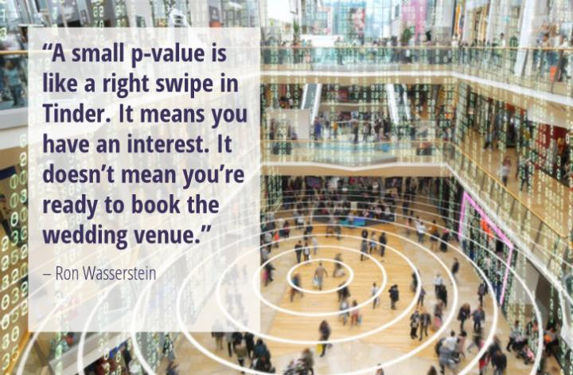

Quantifying Evidence Against the Null Hypothesis: p-Value
So far in the course, we have been using the range of likely values to evaluate our observed summary measure. Another way that statisticians evaluate observed summary measures is to compute a measure of evidence called the p-value. The pvalue quantifies the probability that we would see the observed summary that we did (or a summary measure that is more extreme) if the null hypothesis is true. (Note: The “p” in p-value is short for probability).
Computing a p-Value
To compute a p-value, you count the number of collected summary measures that are at least as extreme as the observed result, and divide this by the total number of results. This value is then reported as a decimal value.
\[ p = \frac{\bigg(\text{number of collected summary measures at least as extreme as the observed summary}\bigg) + 1}{\bigg(\text{total number of collected results in the simulation}\bigg) + 1} \]
To figure out the number of collected summary measures at least as extreme as the observed summary, we need to count the number of summary measures in the direction of the alternative hypothesis that are at least as extreme as the observed summary measure. For example, if the alternative hypothesis is “less than”, we count the number of summary measures less than or equal to our observed summary. On the other hand, if the alternative hypothesis is “greater than”, we count the number of summary measures greater than or equal to our observed summary.
FYI
The alternative hypothesis dictates the direction of more extreme values.
To illustrate this, we will re-examine simulation results from the Sleep Deprivation activity Recall in that activity, the two statistical hypotheses (written in the language of mathematics) were:
\[ \begin{split} H_0:~ &\mu_{\text{Unrestricted Sleep}} - \mu_{\text{Sleep Deprived}} = 0\\ H_A:~ &\mu_{\text{Unrestricted Sleep}} - \mu_{\text{Sleep Deprived}} > 0 \end{split} \]
Also recall that the in the observed data, we found a difference in means of 15.9. Figure 1 shows a plot of 100 differences in means simulated under the null hypothesis. A vertical line is shown at the observed difference of 15.9.
To compute the p-value we need to count the number of collected summary measures that are at least as extreme as 15.9 (our observed difference). Since the alternative hypothesis was \(\mu_{\text{Unrestricted Sleep}} - \mu_{\text{Sleep Deprived}} > 0\), we need to count the number of collected summary measures that are greater than or equal to 15.9. Here there are 2 simulated results that are at least as extreme as 15.9 (\(\geq 15.9\)).
\[ \begin{split} p &= \frac{\bigg(\text{number of collected summary measures } \geq 15.9\bigg) + 1}{\bigg(\text{total number of collected results in the simulation}\bigg) + 1} \\[1em] &= \frac{2 + 1}{100 + 1} \\[1em] &= \frac{3}{101} \\[1em] &= 0.0297 \end{split} \]
FYI
Adding one to the numerator and denominator in our p-value calculation assures that we never get a p-value of 0.
Consider the p-value if our observed result would have been 18 (instead of 15.9). There are 0 results that are at least as extreme as 18 (\(\geq 18\)). Without adding one to the numerator and denominator, we would report a p-value of \(\frac{0}{100} =0\). This implies that seeing a result at least as extreme as 18 under the null hypothesis model is impossible. (remember the “p” stands for probability, and a probability of 0 implies something never occurs!) The problem is that we only ran 100 trials of the simulation. If we had run this simulation for all possible randomizations of the data, we would have seen results \(\geq 18\). Adding one fixes this issue.
Interpreting a p-Value
The p-value quantifies the probability of seeing the observed summary that we did (or a summary measure that is more extreme) if the null hypothesis is true. So, interpreting our p-value of 0.0297, we would say:
The probability of seeing a difference in means at least as extreme as 15.9, if the null hypothesis is true that there is no difference in improvement between the unrestricted and sleep deprived groups, is 0.0297.
Using the p-Value to Evaluate the Null Hypothesis
This low probability implies that it is quite unlikely that we would see a result as extreme as 15.9, or more extreme, if the null hypothesis is true. Because of this, we would reject the null hypothesis.
In this example, it is pretty evident that we should reject the null hypothesis because 0.0297 is quite a low probability. How low does the p-value have to be to reject the null hypothesis? To answer this question, we need to go back to our range of likely values and the Empirical Rule. Remember that the formula for computing our range of likely values was:
\[ \text{Range of Likely Values} = \text{Expected Value} \pm 2(\text{Standard Error}) \]
Also recall that the Empirical Rule stated that in a normal distribution 95% of the values in the distribution would be within two standard deviations. Using these two ideas, that implies that in our distribution of collected summaries, 95% of the collected summary measures will be in our range of likely values. Also remember that we rejected the null hypthesis when the observed summary was outside that range of likely values. That means that to reject the null hypothesis, our observed summary had to be in the most extreme 5% of the distribution!
Another way of thinking about the p-value is that it is actually indicating where in the distribution the observed summary lies. Because of this, we can evaluate the null hypothesis using the p-value by asking whether the observed difference is in the outer 5% of the distribution of collected summaries. In our example, the p-value of 0.0297 suggests that the observed difference of 15.9 lies in the most extreme 2.97% of the distribution. This is in the outer 5% of the distribution, so we reject the null hypothesis.
This evaluation essentially boils down to asking whether the p-value is less than 0.05. If it is, that implies the observed summary is in the outer 5% of the distribution of collected summaries and is quite unlikely if the null hypothesis is true causing us to reject the null hypothesis. If the p-value is greater than or equal to 0.05, that implies the observed summary is NOT in the outer 5% of the distribution of collected summaries and is consistent with a summary expected under the null hypothesis, which causues us to fail to reject the null hypothesis.
VOCABULARY
Statisticians use the term statistically significant to refer to findings where they reject the null hypothesis (i.e., they fins a p-value less than 0.05).
Statistical Significance vs. Practical Significance
Large p-values indicate that the observed data are more compatible with the results from the model, while small p-values indicate that the observed data are not very compatible with the results from the model. As researchers, our goal is often to then translate this quantitative evidence into support for the hypothesized model. For example, in the Sleep Deprivation study, we obtained a p-value of 0.0297. This suggests a low degree of compatibility between the observed data (our empirical evidence) and the null hypothesis. Because our p-value is less than 0.05, we might report the results as statistically significant.
Don’t be fooled by the word “significant” in the phrase “statistically significant”. It does not mean important. All it means is that the observed summary measure is more extreme tahn we expect because of experimental variation if the null hypothesis is true. “Practically significant” results, on the other hand, indicate that the difference in means/proportions is meaningful and impactful in a real-world context. In our example the broader scientific question is about whether sleep deprivation has a harmful effect on learning. Is a difference of 15.9 a meaningful difference? This is a question that cannot be answered by a p-value.
A statistically significant finding may be practically unimportant.
To know whether the difference is of practical importance, you need to go beyond the p-value to both your experiences and the domain literature. This will help you understand whether the magnitude of difference you observed is meaningful or not. As an example, one study of the impact of SAT coaching found that students who were coached on the SAT improved their SAT math score by an average of 29 points while a control group that was no coached improved their SAT math score by an average of 21 points. The researchers found that the observed difference in mean improcment (which was 8 points) was statistically significant and concluded that coaching improved scores. But, is an improvement of 8 points on the SAT (which is on an 800 point scale) meaningful?
Two other things that impact practical importance of findings are the ability to make: (1) generalizations, and (2) cause-and-effect inferences. These abilities, as you are aware, are not governed by the p-value, but by the design of the study: How were particiants selected from the larger population? How were participants assigned to groups? Don’t get too excited about small p-values. Ask whether they are subastantively meaningful, whether the results generalize, and whether a causal infernece can be made. Ron Wassertein, former president of the American Statistical Association reminds us about not getting overly-excited about small p-vlues when he stated:
Small p-values are like a right-swipe in Tinder. It means you have an interest. It doesn’t mean you’re ready to book the wedding venue.

Six Principles about p-Values
Because they are so ubiquitous in the research literature for any field, and because they are often mis-interpreted (even by PhDs, researchers, and math teachers) it is important to be aware of what a p-value tells you, and more importantly, what it doesn’t tell you. To this end, the American Statistical Association released a statement on p-values in which it listed six principles:1
- Principle 1: p-values can indicate how incompatible the data are with a specified statistical model.
- Principle 2: p-values do not measure the probability that the studied hypothesis is true, or the probability that the data were produced by random chance alone.
- Principle 3: Scientific conclusions and business or policy decisions should not be based only on whether a p-value passes a specific threshold.
- Principle 4: Proper inference requires full reporting and transparency.
- Principle 5: A p-value does not measure the size of an effect or the importance of a result.
- Principle 6: By itself, a p-value does not provide a good measure of evidence regarding a model or hypothesis.
Yaddanapudi (2016) published a paper in the Journal of Anaesthesiology, Clinical Pharmacology in which she explains each of these six principles for practicing physician-scientists using an example of treatment efficacy for a drug.↩︎